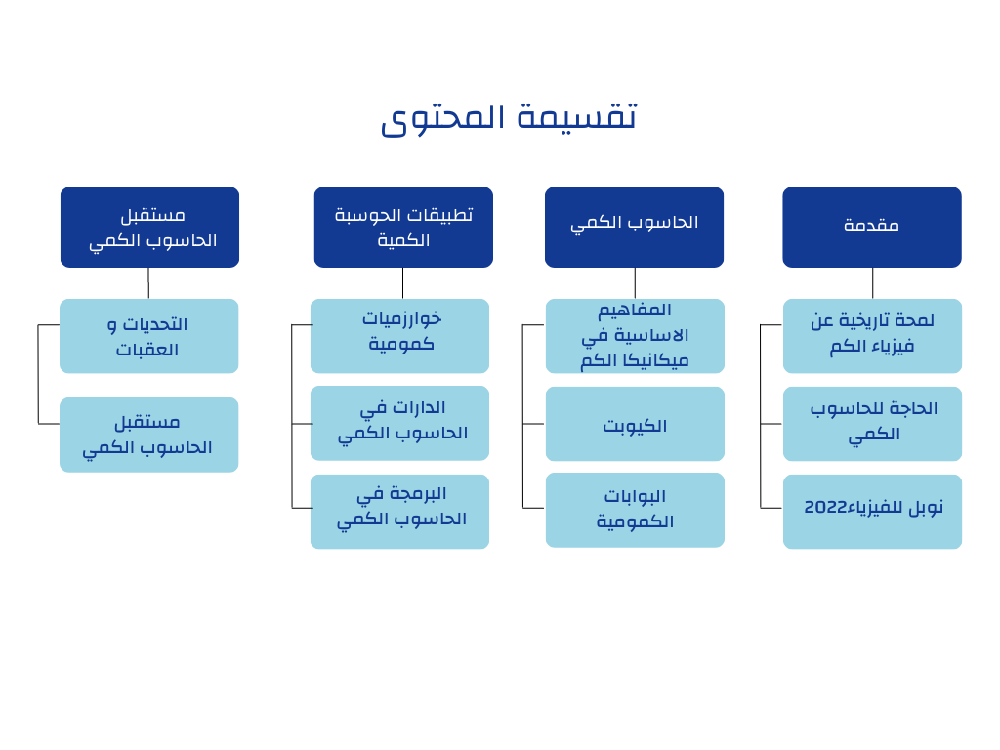

عربي كوانتم
انشاء هذه المنصة بمبادرة من مجموعة من طلبة علم الحاسب لدرجة البكالوريوس في جامعة القدس - فلسطين لتكون رسالة التخرج وتثري المحتوى العربي عن الحوسبة الكمية ولتوفير منصة علمية عربية تجمع كل المهتمين في مجال الحوسبة الكمية وما يخصها بالاضافة لتكون هذه المنصة وسيلة واداة تتيح الفرصة لمن يريد نشر المتحوى او من يهتم في تلقي المزيد من المعلومات عن الحوسبة الكمية لابداء وجودهم واظهار ارائهم ومتطلعاتهم.
تم تصميم هذا الموقع ليتم تطوير محتواه باستمرار ليواكب اخر التطلعات في مجال الحوسبة الكمية وليتمكن جميع الزوار من تطوير المحتوى في هذا الموقع عبر استخدام اداة "عدل هذه الصفحة" الموجودة في نهاية كل مقال
